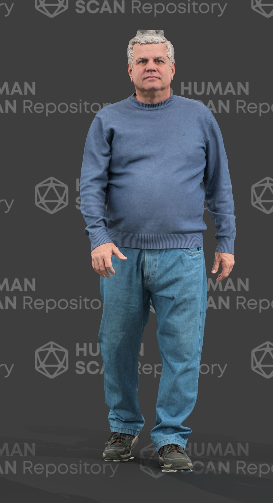
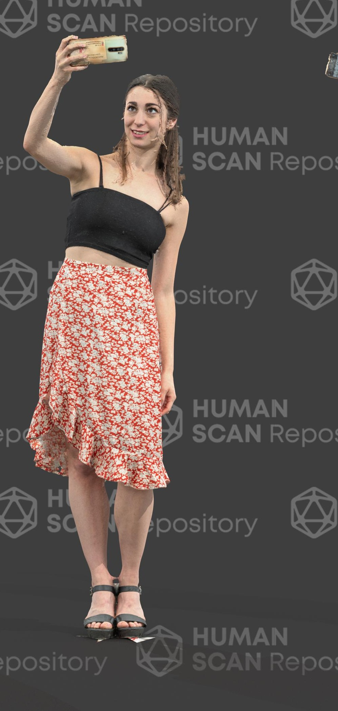
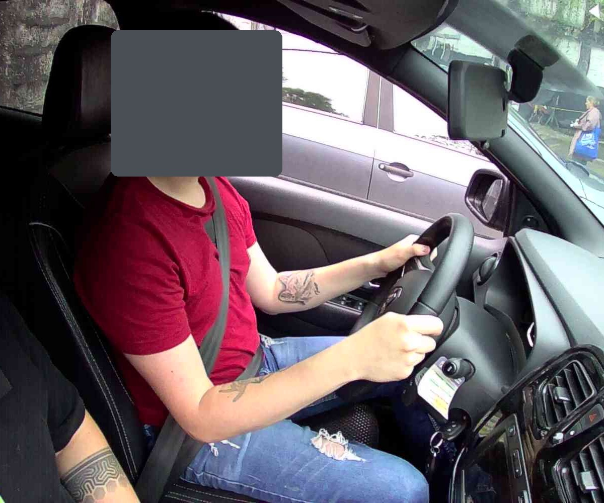
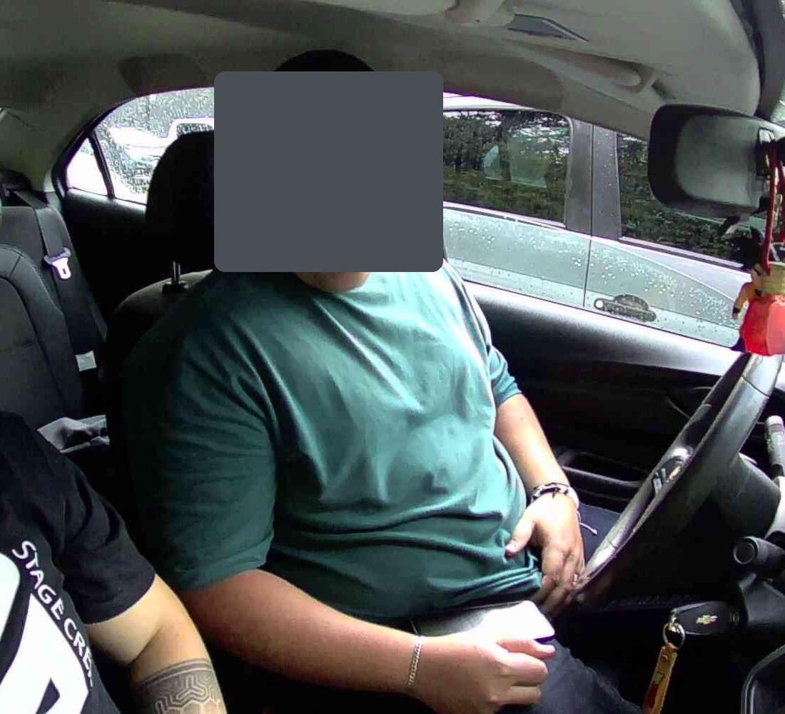
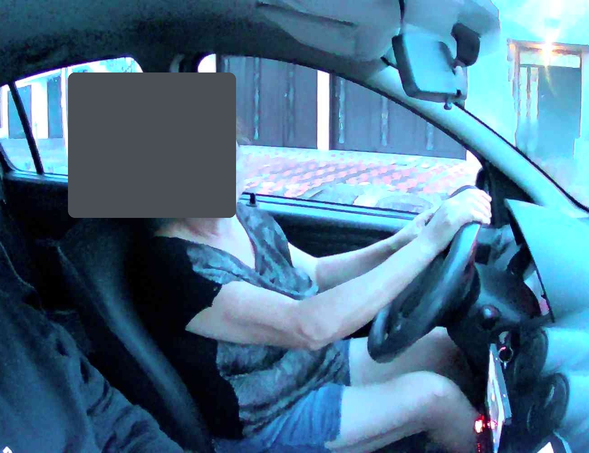
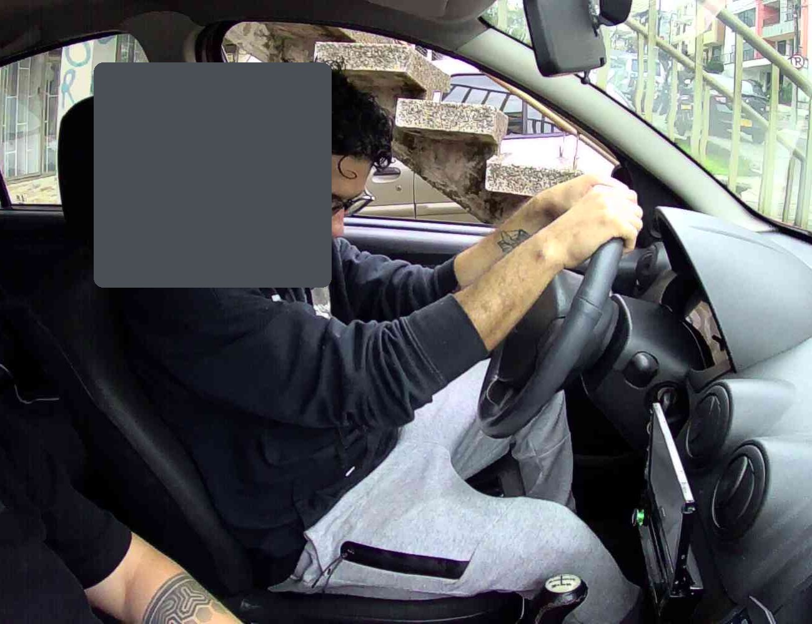
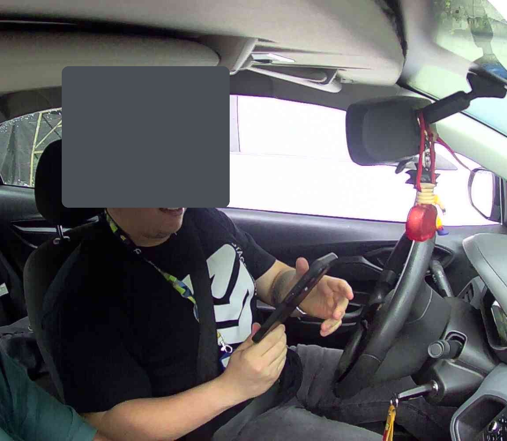
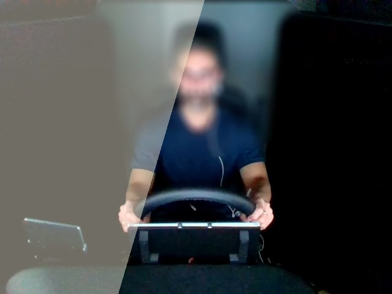
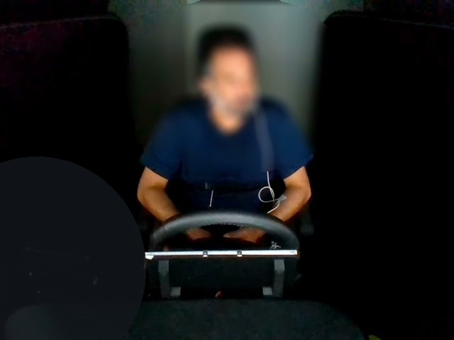

Visible
Joint nhìn thấy đủ để đặt tọa độ trực tiếp.
đặt vào tâm giải phẫuCVAT SKELETON · 240 PHÚT
Gán COCO-17 trên người thật, xử lý che khuất có lý do, tự kiểm rồi export một bộ evidence có thể audit.
Hoàn tất sáu kiểm tra. Nếu một mục sai, dừng trước khi tạo skeleton.
EVIDENCE LADDER
Calibration dạy anatomy và topology. Cabin kiểm tra khả năng quyết định khi bằng chứng bị giới hạn.


Năm facial node luôn đặt Outside vì mask đã loại bỏ bằng chứng. Các node còn lại vẫn phải xét riêng từng ảnh.







Nguồn, license, biến đổi privacy và SHA-256 của từng ảnh nằm trong image manifest và data governance.
Visibility mô tả bằng chứng annotation, không mô tả hành vi hay trạng thái của người trong ảnh.
Joint nhìn thấy đủ để đặt tọa độ trực tiếp.
đặt vào tâm giải phẫuJoint bị che nhưng vị trí vẫn suy ra hợp lý từ cấu trúc cơ thể.
đặt điểm + bật OccludedJoint ngoài khung hoặc không còn đủ evidence để gán.
đặt Outside, không đoán tọa độLàm independent attempt trước. Model, peer hoặc reference chỉ xuất hiện sau self-QC.
Xác nhận 10 frame, label person và 17 sublabel. Frame 0 đến 1 là calibration.
Tasks → task → jobChọn Skeleton rồi chọn person. Đặt node theo thứ tự hiển thị, không bỏ qua node khó.
Skeleton → person → 17 nodesQuyết định riêng cho từng joint. Occluded chỉ dùng khi còn đủ cơ sở suy ra vị trí.
Visible ≠ Occluded ≠ OutsideKiểm topology, trái phải, anatomy, visibility và node bị thiếu theo ba lượt cố định.
scope → topology → geometrySave, reload một frame để kiểm persistence, rồi export đúng COCO Keypoints 1.0.
Save → Export → COCO Keypoints 1.0Chạy validator, đối chiếu visibility report, xử lý finding trong CVAT rồi export lại nếu annotation đổi.
validate → review → fix → validateSupport và stretch cùng dùng một schema, một core task và cùng bộ nộp.
SUBMISSION
Validator kiểm cấu trúc và consistency. Semantic review mới kiểm vị trí giải phẫu và chất lượng quyết định.
COCO_KEYPOINTS_EXPORT.zip
VISIBILITY_REPORT.csv
POSE_REVIEW.mdKhông thêm model weight, raw source, reference hoặc file tạm.
python3 scripts/validate-submission.py --export COCO_KEYPOINTS_EXPORT.zip --write-report VISIBILITY_REPORT.csvPOSE_REVIEW.md, đóng mọi TODO và finding.python3 scripts/validate-submission.py --submission-dir submissionStructural PASS không tự động đồng nghĩa annotation đúng.
Giữ evidence hiện tại, xác định lỗi thuộc tool, input hay rule rồi mới sửa.
Dừng task. Kiểm lại SVG schema và label person; không tự thêm node bằng tay.
Reload đúng frame, kiểm trạng thái Outside và Objects list. Ghi frame cùng node bị ảnh hưởng.
Mở Requests, chờ trạng thái Finished rồi tải lại. Không đổi format để né lỗi.
Kiểm task có đúng 10 ảnh và tên giữ nguyên. Sửa từ CVAT hoặc tạo task đúng contract, không sửa JSON thủ công.